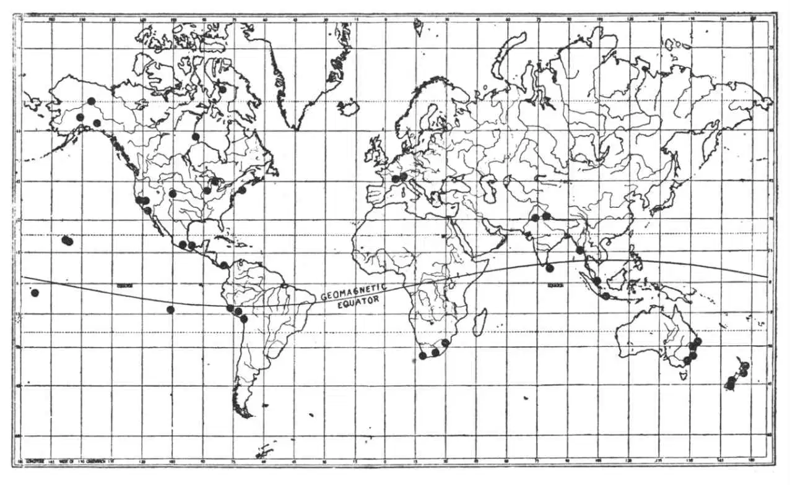
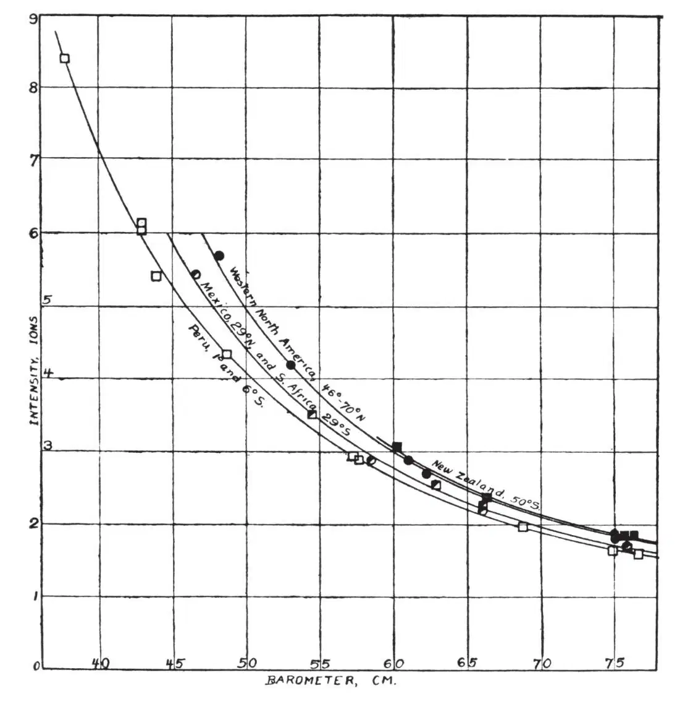
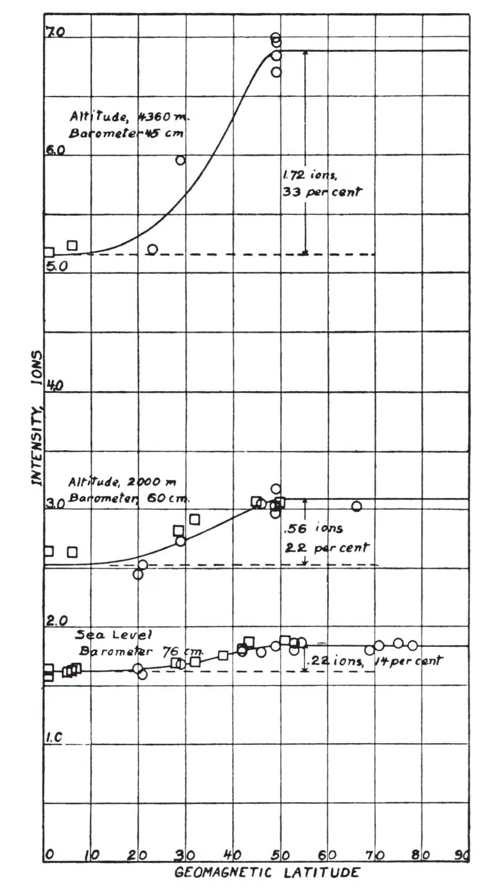
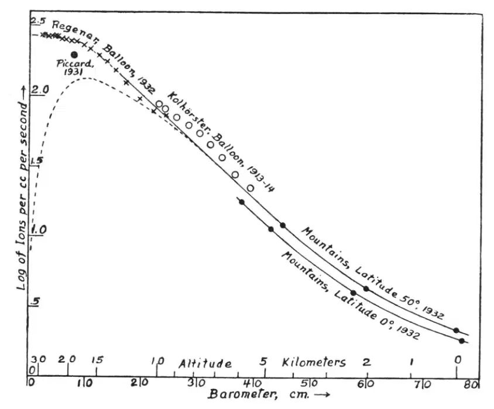

英文
英文阿瑟·康普顿
编者按
这是阿瑟·康普顿在美国物理学会的一次会议上就宇宙射线的地理分布以及它们的强度随高度变化的问题所作的演讲。与热带地区相比，宇宙射线的强度在温带和极区纬度上会有明显增强，这也许可以通过以下方式进行解释：如果初级宇宙射线是电子，它们以两个能量范围到达地球，那么高能粒子流几乎不会受到地球磁场的影响；而较低能段的粒子流会发生很大的偏转，因而根本无法到达赤道地区。这些数据表明构成宇宙射线的粒子不是光子，但不能区分是普通电子、“带正电的电子”、质子还是α粒子。今天我们知道大多数初级宇宙射线都是质子。 英文
能够直接说明宇宙射线性质的实验有三类。它们是：（1）博特–柯尔霍斯特的双计数器实验，可以用于比较穿过计数器的粒子的吸收和宇宙射线的吸收；（2）测量宇宙射线在地球上不同地区的相对强度，目的是想了解地球磁场对其造成的影响；（3）研究宇宙射线强度随海拔高度的变化，根据宇宙射线是电子或是光子而采用不同的定律。 英文
（1）博特–柯尔霍斯特实验用于测量金块或铅块对高速带电粒子的吸收，带电粒子可在两个相邻计数室中产生同步脉冲。实验发现，这类吸收出奇地小，实际上与宇宙射线自身的吸收大致相同。 英文
对两者在吸收性质上相似的最简单的解释是假定宇宙射线就是高速运动的粒子。然而，还存在另外一种可能性，即认为初级宇宙射线是光子，当光子停止时会打出高速电子作为反冲电子，这些反冲电子以与初级宇宙射线本身大致相同的速率被吸收。理论计算表明，反冲电子被吸收的速度应该是产生它们的光子的吸收速度的5倍到10倍。这些计算结果不是很准确，因为外推远远超过了被现有公式检验过的波长范围。由于这个原因，虽然宇宙射线和高速粒子具有相同的吸收系数并不足以排除这些粒子就是宇宙射线激发的反冲电子。不过，这仍然难以想象，公式的误差会大到5～10倍，以至于认为吸收系数的符合是由次级电子引起的。 英文
（2）如果宇宙射线是从遥远太空进入地球大气的带电粒子，那么地球磁场应该会影响它们的地理分布。斯托默和爱泼斯坦曾对此进行过理论上的研究，最近勒梅特和瓦拉塔又大大完善了这一理论。他们的研究表明：对于能量小于109电子伏特的电子，它们在接近地球时只能到达纬度约60°以北的地方；对于能量大于约5×1010电子伏特的电子，其地理分布不受地球磁场的影响；如果能量介于两者之间，入射电子的强度将会按照其能量分布随纬度而异。 英文
克莱在世界各地进行了宇宙射线相对强度的实验研究，他在爪哇与荷兰之间往返了好几次后发现赤道附近的强度总是比较低；密立根和卡梅伦也发现在玻利维亚湖附近的宇宙射线强度略低于加州山湖，而在帕萨迪纳与靠近北极的丘吉尔港之间的宇宙射线强度并无差别；博特和柯尔霍斯特带着一支计数管往返于汉堡（北纬53°）和斯匹次卑尔根群岛（北纬81°）之间，他们用误差较大的仪器没有检测到宇宙射线强度的变化；肯尼迪在格兰特的指导下，带了同样的装置从澳大利亚的阿得雷德到南极洲，同样没有测量到强度的变化；但科林在测量了斯堪的纳维亚半岛上从北纬50°到70°之间的宇宙射线强度后发现在大约北纬55°处有一个极大值。最近，霍夫曼总结了人们对这些测量结果的普遍看法：“迄今为止得到的结果从总体上说是负面的。大多数观测者认为，在实验误差范围内，宇宙射线的强度恒为一个常数，而那些发现强度确实存在差别的作者在公布结果时带有某种保留。” 英文
在过去的18个月内，麻省理工学院的贝内特教授、丹佛大学的斯特恩斯教授和我组织了一组有60余位物理学家参加的10次考察，我们试图在限定的时间内对宇宙射线的地理分布进行尽可能大范围的研究。图1中标出了分布在世界各地的81个观察站的位置，在这些位置我们都进行了测量。这些观察站在南北半球上基本上是平均分布的。从南纬46°延伸到北纬78°，从海平面一直到海拔约20,000英尺处（图2和图3）。当把这些数据汇总在一起时，我们发现在温带和两极处的宇宙射线强度与赤道地区明显不同。在海平面上，强度差约为14%；在海拔2,000米处，约为22%；在海拔4,400米处，约为33%。在地磁纬度25°和40°之间，赤道地区宇宙射线强度与温带地区宇宙射线强度之间的差别会格外明显。 英文

图1．考察队1932年在全球测量宇宙射线的主要站点分布图 英文

图2．典型的强度–气压曲线，这张图说明在世界上纬度不同的地区，宇宙射线的强度是不相同的。圆形，北半球；方块，南半球。 英文

图3．宇宙射线强度随地磁纬度的变化，包括在海拔高度不同的三个地点测量得到的结果。海拔越高，变化越明显。曲线是根据勒梅特–瓦拉塔的理论计算出来的。 英文
对这些实验数据与勒梅特和瓦拉塔理论的比较说明：如果进入地球大气层的宇宙射线由两个能量组的电子组成，则宇宙射线的分布就与人们预期的大体一致。其中的一组电子具有很高的能量，以至于基本不受地球磁场的影响。在温带地区的这组电子的能量占海平面处宇宙射线总辐射量的88%，这组电子是迄今为止的实验所关注的可以看作是光子的那一类。在海拔4,400米处该成分占总辐射量的75%。第二组成分穿透力稍差并表现为有相近能量的粒子，如果它们是电子，将具有约7×109电子伏特的能量。这些粒子可以进入地球的温带地区，但不能进入靠近赤道的地区。 英文
可以说，如果光子是组成宇宙射线的主体，那么即使是穿透性较差的那些宇宙射线所具有的能量也要远远高于由光子产生的反冲电子的能量。密立根认为，在海平面处对宇宙射线的吸收的测量表明：如果宇宙射线是光子，那么它们的能量就会达到2×108电子伏特数量级。这比使温带和热带地区宇宙射线强度产生差异的电子的能量小很多（相差35倍），以至于我们似乎可以肯定到达地球的粒子不是反冲电子。另一方面，勒梅特–瓦拉塔的理论要求粒子的能量应达到7×109电子伏特，这意味着粒子的射程约为地球大气层厚度的三倍。这一点符合这样的事实，即这些射线可以穿透地球大气，但是有一定的困难。 英文
对宇宙射线地理分布的研究表明，宇宙射线中穿透力较差的部分起码会包含高速带电粒子。对于穿透性较强的成分，我们的结论是：如果它们是带电粒子，那么它们的能量就必须达到或超过3×1010电子伏特。 英文
（3）在过去的两年内，人们已经进行了大量的实验以研究宇宙射线强度随海拔高度的变化。目前以雷格纳的探空气球和皮卡德的著名平流层气球到达的高度最高。我们在山上作实验时也特别关注这个研究课题。在图4中，我们对山上的实验数据与气球观测的结果进行了比较。这些数据表明：随着高度的增加，宇宙射线的强度很快上升，持续呈指数型增长直至15 km高度，从那儿起，当测试仪器接近大气层顶部时，强度达到极限值。 英文

图4．综合气球实验和在山上所作的实验得到的宇宙射线强度随海拔高度的变化曲线。虚线是把宇宙射线看成光子后的预期值。 英文
假如我们把进入地球大气层的宇宙射线看作是光子，那么在太空中可能与这些光子相关联的次级电子都将因地球磁场的作用而偏离地球。因而我们应该有一束纯光子束进入大气层。在大气层表面，这些光子几乎不会发生电离，因为电离直接由穿过计数室的次级电子产生。然而，这些次级电子只有在吸收了初始光子的能量后才能产生，它们在光子穿越大气层的厚度小于电子的射程时是不会达到其正常强度的。这意味着在海拔很高的地方，由进入地球的光子束引起的电离应该接近于零。当到达大气层某一深度处的宇宙射线有将近一半的量被吸收时，电离电流将达到极大值，而在不断接近海平面的过程中，宇宙射线的强度应逐渐减小。我们在高山上所作的实验与最近的气球实验结果相同，都没有发现在高海拔处出现极大值。这似乎可以排除从遥远太空进入地球大气层的宇宙射线是光子的可能性。 英文
另一方面，如果我们假设宇宙射线是从上方进入地球大气层的电子，我们应该能够很好地预期由现有实验得到的那类强度–高度曲线。众所周知，高速电子产生的每单位路径的电离在很宽的能量范围内几乎保持为一个常数。因此，如果一束这样的电子进入大气层，它们将产生几乎完全相同的电离直到这样一个深度，在这个深度上有数量相当可观的电子被空气阻止。如果初始的电子都是向下运动的，那么宇宙射线的电离发生快速下降的高度界线或范围将是非常明确的。然而，如果初始电子是从各个方向进入大气层的，则其中的某些电子会停止在大气层的上部。于是，假定宇宙射线是由外层空间进入地球大气层的电子所组成，实验的强度–高度曲线的总体特征就能很容易地得到解释。 英文
如果雷格纳去年夏天用他的气球飞行实验得到的结果是可靠的，那么在接近大气层顶部时就不存在可探测的电离度下降。这意味着按照上述推理，在进入地球大气层的宇宙射线中，绝大部分都不是光子。 英文
另一方面，如果宇宙射线以电子形式进入大气层，则它们也会生成光子，就像轰击靶子的阴极射线能产生X射线一样。于是，在海拔高度较低的地方将出现电子和光子的混合，可以预期光子将有更强的穿透能力。而密立根、雷格纳和其他研究者在水下很深处观测到的穿透力超强的宇宙射线并非不可能存在，它们也许就是被入射电子所激发的光子。 英文
虽然我们推断组成宇宙射线的带电粒子可能是电子，但我们知道前面提到的那些实验都无法判断粒子带的是正电还是负电。这些实验结果同样可以用于说明宇宙射线是由质子或高速α粒子组成的。然而，如果假设初级宇宙射线的主要成分是光子，我认为上述数据就没办法得到解释了。 英文
（沈乃澂 翻译；马宇蒨 审稿）
* 这是在专题讨论会上的一篇有关宇宙射线的演讲稿，该讨论会是由美国物理学会于1932年12月30日在大西洋城举办的。